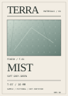
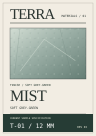

Material sample study
The shade stays.
The spec changes.
Two sample labels share the Mist finish. Check the revision and the specification band before selecting the sample. The darker band identifies the current concept record.
| Revision | Code | Thickness |
|---|---|---|
| R02 / Superseded | T-07 | 10 mm |
| R03 / Current | T-01 | 12 mm |

